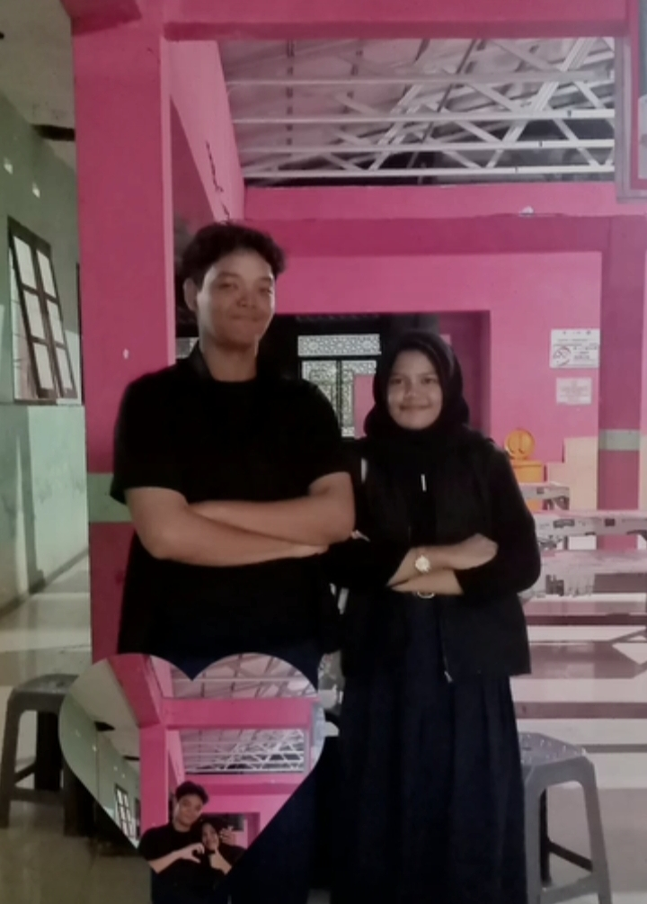
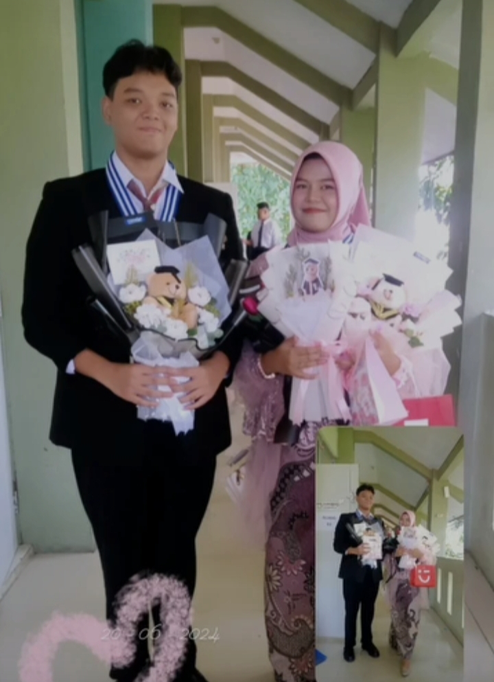

Bersama mu!?
bersamamu semuanya tenang dan tidak ada yang perlu aku khawatirkan, bersamamu membuat ku nyaman selalu, bersamamu aku bahagia, bersamamu aku menjadi diri ku sendiri, bersama mu membuat aku banyak ngomong, bersamamu membuat aku menjadi orang yang khawatir, bersamamu aku menjadi orang yang peduli dengan hal hal apapun itu.
bersamamu di mulai dari 2023, masa masanya kita smp kelas 9 di smpn 1 margahayu, kamu inget spot ngobrol kita pertama kali? kamu inget bagaimana kita bertemu? kamu ingat waktu yang kita sukai?
kalau gak inget parah, wkwkwk bercanda, ayo kita lihat kenangan kita, aku buat website ini aku pingin nyimpan kenangan bersamamu lewat hobi ku progamer
inget gak kita ketemu gimana? kita ketemu di neutron yap tempat bimbel smp aku dulu dan kamu juga bimbel di neutron awalnya aku lihat kamu orangnya pendiem alias aku mandang kamu introvert kamu masuk waktu hari ke 2 pertemuan kamu duduk di belakang aku dan aku depan kamu, aku masih inget pelajaran nya kita belajar matematika sama mba saima, aku gak berani ngajak kenalan kamu dan aku juga gak ada niatan buat kenalan sama kamu.
terus waktu kita ketemu di smp pertama kalinya, karena aku belum pernah lihat kamu sama sekali di smp waktu itu karena kelas kita berjauhan, kita ketemu waktu ada event sekolah yaitu lomba 17 agustusan, hahahah kamu ngejek aku karena pake daster karena aku ikutan lomba mindahin gelas plastik pakai balon bu haji
kata kamu ngejek ke aku, di situ aku gak peduliin ejekan kamu, karena di situ I don't care If I'm not beautiful, it's because I don't want to look beautiful in your eyes, tapi sekarang aku memperbaiki diri aku pingin kelihatan sempurna dimatamu walaupun ya gak sesuai expectations kamu.
owh iyah kamu percaya tarot gak? kalau aku percaya, soalnya sebelum aku kenal sama kamu seminggu sebelumnya aku baca tarot sama tiktokers wkwwkwk @tarotbyginagita ini akunnya wkwk aku order dia dan aku baca gimana percintaan aku kedepannya karena waktu itu aku udah jomblo lama hahahahah, dia bilang ada problem di akunya jadi gak orang orang takut deketin aku, tapi dia lihat di kartunya pasti ada orang yang bakal deketin kamu dan ciri cirinya persis banget kayak kamu yang dia bilang, mulai dari fisik, hobi, cara ngedeketinnya, bulan lahirnya. dan aku percaya tarot
itu aku deket sama kamu karena aku suka ke ujung bangunan sekolah aku sama diandra, padahal di situ aku gak ada niatan ketemu sama kamu, aku cuman niat nyari angin sama ngerjain temen temen ku yang mau ke kantin, tapi aku ngobrol juga sana temen kelas kamu raisya sama raysa.
terus ada temen mu yang kayak bakso itu wkwkkw yap kenlle dia temen kamu yang kamu juga kalau sama dia sebel wkkwkw, dia nih fitnah bilang ke kamu itu ada danas nyariin pingin ngobrol
dia bilang, emang dasar tukang fitnah tiba tiba kamu keluar kelas dan aku cuman lihatin kamu doang terus kamu nanya ada apa
aku di situ binggung aku cuman gelengin kepala wkkwkw, terus kamu basa basi tadi pelajaran apa?
kamu nanya ke aku, aku lupa aku jawab apa intinya kita ngobrol soal pelajaran apa tadi.
kamu inget gak sih waktu kita pdktan, awalnya aku tuh ngechat kamu kan terus aku minta foto materi yang di les terus saling save nomber deh terus aku bikin sw mobile legend pas itu terus kamu ngejek aku "poke" iya deh kan pas itu aku masih epic abadi wkkwkwk ampun suhuuu, teeus terus kita chatan terus mabar deh di situ pertama kali aku main support heheh.
terus aku selalu ajah ada pas kamu lagi olahraga, kebetulan aja aku sering jamkos pas pasan sama jam pelajaran olahraga kamu, kebetulan juga spot kelas aku langsung ke lapangan utama, jadi di anggepnya ngelihatin kamu eya wkwkwk, padahal cuman ngadem sambil lihatin pohon iconic samar, btw samar sama neutron jadi bukti bahwa kita pernah mencintai satu sama lain yah wkwkw.
kamu inget gak minuman favorite aku dulu apa? hayooo hahaha yess fruite tea!! fruite tea juga bagian dari pendekatan kita loh, dulu aku gak tau tiba tiba ada niatan beliin kamu fruit tea waktu olahraga, nah awalnya aku yuh mau beliin kamu sama kenlee tapi fruite tea yang 1 nya di minum diandra wkwkwk, jadi aku cuman kasih ke salah satu, dan gak tau kenapa aku bilangnya buat kamu, aku masih inget aku beliin kamu fruit tea pertama kali yang ungu, terus minggu besoknya aku ngasih kamu fruit tea lagih tapi yang ini beda aku ngasih surat juga ke kamu hahahaha, tau gak sih sticky note nya aku minta ke diandra wkwkwkw terus aku bikin suratnya sampai berulang ulang sumpah ada mungkin 8 kali wkwkwk grogi takut salah, gak tau kenapa gak kayak biasanya aku nulis surat biasa ajah, ini aku nervous.
wkwkwk terus selain ituu kamu seringg banget ngereply sw aku, aku miror selfie di miniso kamu reply dimana cantik?
awlanya sih massagenya gitu terus di apus sama kamu hahahahah, padahal aku pake scrip jadi ketauan kan ganteng ngetik apah, aku jawab ajah ya di hatimu
kamu malah baper hahahahha aku bilang bercanda wkwkw.
aku jadinya hampir tiap hari ke ujungan bangunan kelas aku buat ngobrol sama kamu, lucu banget wkwkkw ngobrolnya jauhan, terus aku selalu maksa buat anterin ke diandra hahahah jadi nyamuk dia, terus waktu semwster 1 pas ulangan pertengahan semester ada jovaneu mitnah aku hahaha kalau aku pingin fotbar eh tapi di iyain dan di ayoin sama kamu, sumpah aku malu bangett huhuw mana fotonya itu mah di lihatin 2 kelas, kelas aku sama kelas kamu terus mereka bahagia banget lihta kita foto bareng huhuww, terus aku canggung banget dan shock pas kamu rangkul aku huhuww padahal aku takut di gigitt hahahahah, potbar pertama kita dehh.
kamu inget gak tanggal kita jadian? yapp tanggal 20 oktober 2023, awalnya aku udah dapet banyak spoiler kalau kamu bakal nembak aku di jogaja wkwkwkkw bocorr sayangg hahahha, eh tapi ternyata oktober udah jadian ajah nih, ini tuh sehari setelah kita fotbar pertama kita jiyahahahha, lucu bangett yahhh, kamu nembak aku di whatsaap jadinya malem malem tanggal 20 oktober dengan longteks, sayang banget longteksnya udah aku apuss kalau ada aku masukin ke sini deh, maaf yah sayang.
awal sampai sekarang rasanya masih sama, aku masih sayang banget sama kamu, waktu awal aku obses banget sama kamuu, sebaliknya kamu, awalnya aku masih canggung kalau di real life kalau di chat gak sih hahahaha, pas di real life kamu ngajakin aku untuk yang pertama kalinya duduk di sebelah kamu waktu kita bimbel, aduh cangung aku sayang wkwkwk tapi mau gak mau yah mau, TERUSSSSS AKU SHOCKKK BANGETT TAUUUUU waktu kamu megang tangan akuu dalam hati aku woyy help me pleasee
hahahhaha, lagian wktu itu aku the real islami gituh orangnya kan kata kamu bu haji hahahaha huhuwwww, tau gak pulang dari itu aku ngapain di rumah? pingsannnn hahah bercanda muka aku merah wkwkwkkw, teriak teriak gak jelasss, kamu sih hahah.
kamu tuh perhatiannnn banget sama aku, tapi di sini aku belum sama sekali tau gimana caranya perhatian sama kamu, aku gak tau caranya biar kamu makin sayang ataupun suka ataupun cinta sama aku, aku gak tau itu semua gimana caranya, tapi sekarang udah dongg, perasaan aku yah.
kita jadi sering pacaran di sekolah waktu istirahat terus kamu selalu beliin aku fruit tea walaupun salah beliin yang rasa apa kesukaan aku yang aku suka yang freze, tapi gak apa apa aku tetep minum kok, kamu tau gak botolnya masih ada tau sampai sekarang aku simpen di box hahahah.
terus pulangnya kita ke neutron bareng, waktu itu hujan terus kamu buka hoodie kamu terus nutupin kepala aku karena aku gak bawa jaket, jadinya kamu yang basah deh huhuw maaf yahhh sayangg.
tempat pertama kalinya kita main ke luar itu adalah binjas, hahaha inget gak pertama kali kita running date sama syafira sama revan, dan kita fotbar
Tanggal 9 desember 2023 kita study tour perpisahan smp, yap wktu itu kita berangkat hujan sore sore sampai ke rest area 1 malem an turun buat sholat maghrib, dan aku ketemu kamu lagi jalan sama temen temen kamu, ke rest area 2 hehehe di situ aku udah badmood dan aku cuman makan dan nyari kamu tapi gak tau dimana dan ketemu terus itu hug pertama dari kamu heheheh gilaa
sampai di rest area ke 3 aku kecewa banget sama kamu maaf, aku ngedenger kamu ngerokok malem pas sebelum meluk aku, aku marah dan kesel banget sama kamj karena kamu pernah janji ke aku kalau kamu gak bakal ngerokok. habis itu kita ke tebing kraton deh. di tebing kraton kita potbar juga dan jalan bareng.
udah itu kita ke candi prambanan, di sini kita gak ketu karena katanya kamu pusing terus gak turun dari bus, sayang bangetckita gak potbar, yah waktu di candi aku khawatir ke kamu tapi aku cuman nanya nanya ke temen kamu wkwkwk terus have fun sama syafira masuk candi
dari prambanan kita ke hotel, aku beres beres sama mandi karena siap siap, kamu ngajak aku jalan malem di malioboro walaupun ya muka capek karena perjalanan, kita beli gelato bareng, sama menikmati malioboro malem malem, dan indahnya waktu itu hujan, jadi kerasa banget vibe nya hahahah
karena udah malem juga jadi kita balik ke hotel buat istirahat, terus aku iseng main ke atas karena kamu di atas tapi anehnya cerita horonya aku nemu lantai 3 makasih, sama sama, terus second hug dari kamu deh wahahah mengoleksi hug please.
malemnya aku tidur keringetan dan kena keram badan sama kaki dan mimpi buruk i don't know why jadi kebesokannya wah gila muka aku capek++
paginya kita nyantai di malioboro, otw ke taman pintar deh disitu aku dah pusing dan panasnya kebangetan, sama kacamata aku ilang, badmood banget karena tanda h1 menstruasi
udah dari tampin kita ke museum apa ya lupa di sini kamu minta bareng okay deh, dan di sini kacamata aku ketemu di pake kelas b ternyata lmao, di sini aku serius pusing lemes dan mamam bareng kita dan kamu nsikin mood aku yang kepanasan ngasihin jamal kamu buat aku wkwk terus aku bawa ke dalam bus aku hahaha kamu sedih jamalnya aku bawa, tiba tiba aku menstruasi tiba tiba terus kamu kelihatan panik banget, padahal apa yang harus di panikin hahahahha.
dan dari situ kita otw ke pantai yeyy, di sini kita main air bareng, inget gak sendal aku lepas hahahhahahahah dan di paparaziin diandra
udah dari pantai kita otw bandung deh
sebelum wisuda kita ada event bikin year book dan itu malem malem 1 angkatan di smp kita, pulangnya juga kita pitbar
waktu kita wisuda kamu ganteng banget heheheheheh, kamu ngasih aku bunga favorite aku yap tulip sampai sekarang aku simpen.
29 may 2025, um... gak kerasa yah kenangan di atas 2023-2024 aja wkwkw, era nya udah habis, makasih banyak kenangannya seseru itu, dan maaf aku akhirin semuanya gitu aja dan nyakitin kamu